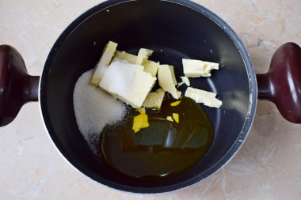
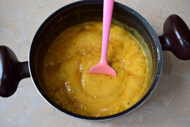
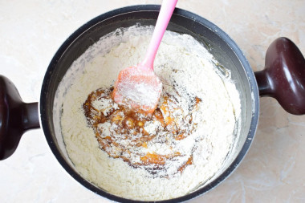
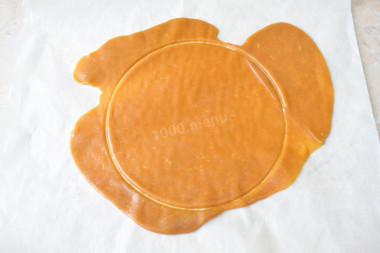
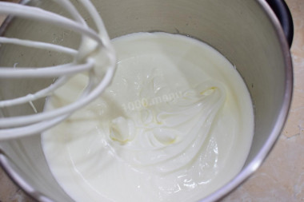
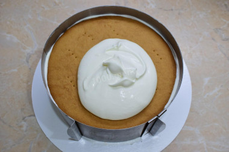

«Медовик»- один из самых известных десертов классической русской кухни. Он был рождён на кухне императорского дворца около двухсот лет назад и с тех пор пользуется огромной любовью во всём мире. Вот как был создан этот восхитительный десерт.
«Медовик» в том виде, который знаком нам сегодня, был создан в 1820-х годах на кухне императорского дворца. Вот как это случилось…
Елизавета Алексеевна, жена Российского Императора Александра I, на дух не переносила мёд. Придворные повара знали об этом и, боясь попасть в немилость к императору, никогда не добавляли его в блюда. Под негласным запретом во дворце было всё – медовые пряники, печенье, коврижки и даже сбитень.Но вот однажды на службу к императору был принят молодой и амбициозный повар-кондитер. История умалчивает, как звали талантливого юношу и почему никто не рассказал ему о вкусовых предпочтениях императрицы. Известно одно: однажды повар представил двору десерт на основе мёда. Никто ещё не пробовал такого восхитительного торта – нежные тонкие и влажные коржи с заварным кремом «кустард» буквально таяли во рту. Десерт напоминал мягкую карамель и покорил сердце императрицы. Когда Елизавета Алексеевна захотела узнать, из чего же приготовлен удивительный торт, повар потерял дар речи – только после подачи ему рассказали о вкусовых табу императрицы. Но молчать было глупо и, справившись с волнением, юноша признался, что основой его десерта является мёд. Императрица, оценив нелепость ситуации, рассмеялась и велела щедро наградить талантливого повара. С тех пор «Медовик» стал любимым десертом императорской семьи и присутствовал на каждом королевском пиру.
История выпечки с добавлением мёда берет свое начало в древних цивилизациях Египта, Греции и Рима. Тогда мёд использовался не столько для вкуса, сколько для продления свежести продуктов – он выступал в роли жидкого абсорбента. Первый рецепт изготовления выпечки был прост: в муку добавляли мёд, оставляли на несколько недель тесто подниматься и потом пекли из него лепешки. Потребовались века, чтобы дрожжевой медовый хлеб превратился в восхитительный десерт.
В XII веке немецкие монахини изобрели прадеда «Медовика» – это был настоящий пирог с орехами и пряностями. Восхитительный рецепт покинул стены монастыря – и вот уже вся Европа ела медовые печенья и пряники. Примерно в это же время во Франции был рожден традиционный медовый кекс с пряностями. Он быстро нашёл почитателей, которые распространили рецепт по другим странам. Каждый повар в каждом регионе добавлял в медовую выпечку частичку своего мастерства и воображения. В своем путешествии десерт приобретал местные черты: где-то его изготавливали с добавлением корицы, где-то – с анисом, где-то – с имбирём. Сочетание последней пряности с мёдом оказалось невероятно удачным – из него родились знаменитые имбирные печенья, которые европейцы обожают по сей день. Бум популярности этой сладкой выпечки не обошел стороной и Восточную Европу: в некоторых странах открывались пекарни, которые занимались исключительно медовыми десертами. В Чехии и Словакии медовый хлеб в форме сердца назывался medovnik, в Польше – miodownik.
| Ингредиенты | Количество |
| Мёд | 300 г |
| Сахар | 400 г |
| Масло сливочное | 400 г |
| Яйцо | 6 шт |
| Мука | 1,4 кг |
| Сода | 1 ч.л. |
| Лимонный сок | 15 г |
| Сметана 30% | 500 г |
| Сливки 33% | 300 г |
| Сметана 20% | 200 г |
| Сахарная пудра | 200 г |

 


